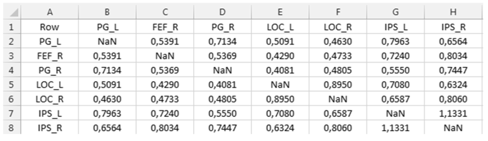

CONN Toolbox: Extract and plot ROI-to-ROI connectivity matrix
The CONN toolbox is a very efficient MATLAB-based tool to perform functional connectivity analysis and I've been an enthusiastic user ever since I discovered it.

Import data from ROI.mat file
CONN automatically creates a ROI.mat file in CONN_ANA_NAME/results/secondlevel/FIRSTLEVEL_NAME/GROUP/SESSION/ folder when cliking the "results explorer" button in the bottom left of the second-level results interface.
load([corr_folder 'ROI.mat']);
numROI = size(ROI, 2);
corr_name = ROI(1).names(1:numROI);
corr_h = []; % Beta value
corr_F = []; % T or F value
corr_p = []; % One-tailed p value
for i = 1:numROI
corr_h = [ corr_h ; ROI(i).h(1:numROI) ];
corr_F = [ corr_F ; ROI(i).F(1:numROI) ];
corr_p = [ corr_p ; ROI(i).p(1:numROI) ];
end
Export to CSV
corr_name2 = strrep(corr_name, '-', '_'); % array2table does not work with '-' in var names
T_h = array2table(corr_h, 'RowNames', corr_name2, 'VariableNames', corr_name2);
T_F = array2table(corr_F, 'RowNames', corr_name2, 'VariableNames', corr_name2);
T_p = array2table(corr_p, 'RowNames', corr_name2, 'VariableNames', corr_name2);
writetable( T_h, [corr_folder 'beta_' corr_net '_' corr_group '_' corr_run '.csv'], 'WriteVariableNames', true, 'WriteRowNames', true, 'delimiter', 'semi' );
writetable( T_F, [corr_folder 'F_' corr_net '_' corr_group '_' corr_run '.csv'], 'WriteVariableNames', true, 'WriteRowNames', true, 'delimiter', 'semi');
writetable( T_p, [corr_folder 'p_' corr_net '_' corr_group '_' corr_run '.csv'], 'WriteVariableNames', true, 'WriteRowNames', true, 'delimiter', 'semi');
We obtain the following connectivity matrix in CSV format
